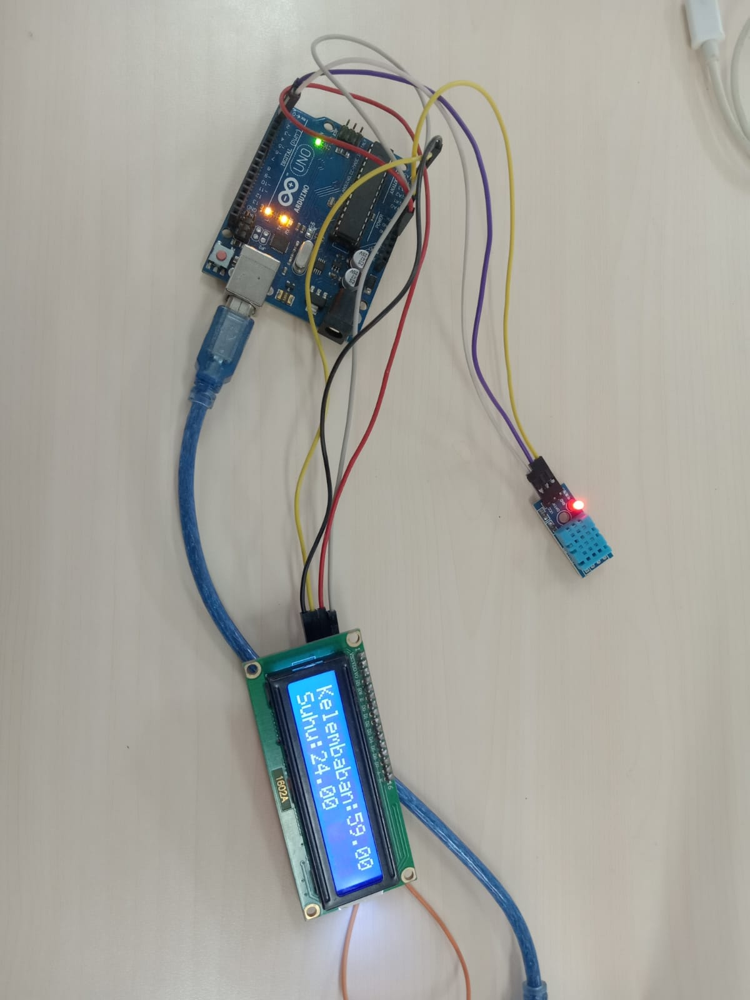
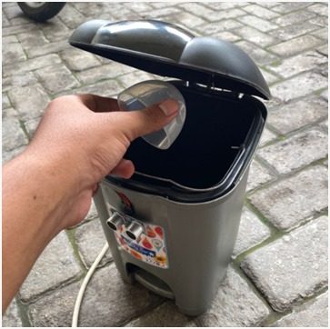
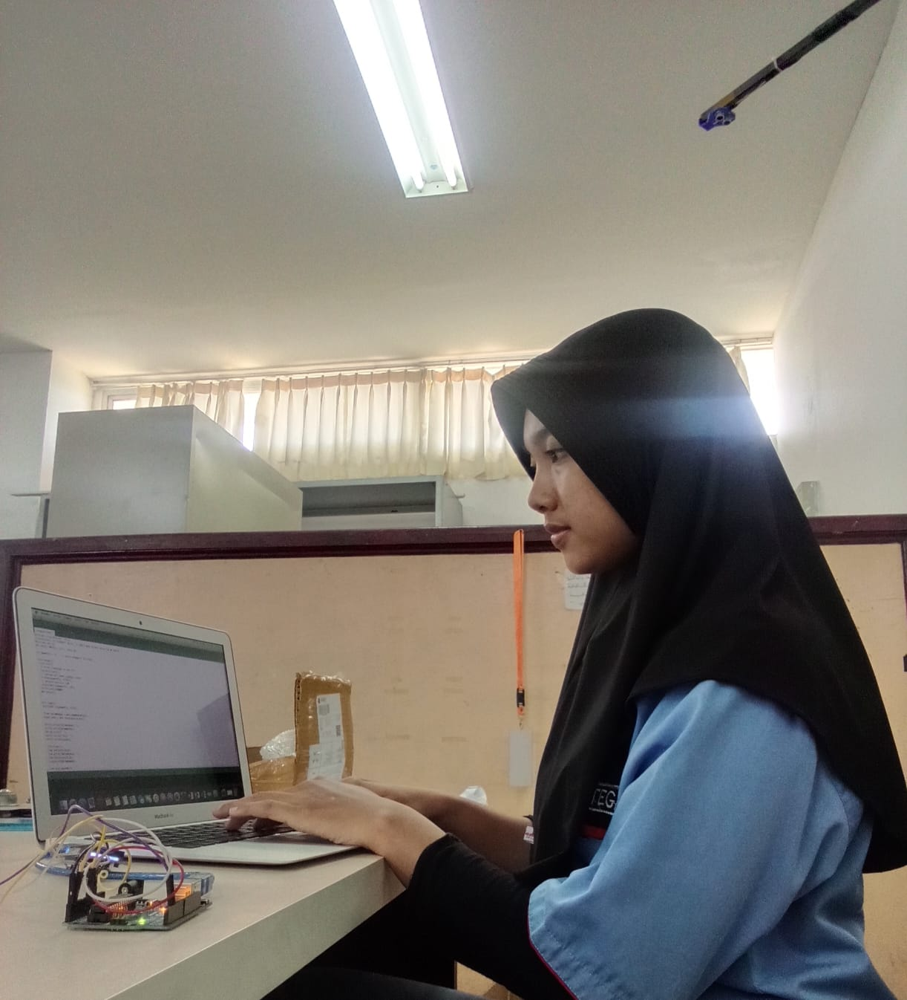

Tentang saya
Halo nama saya Nur Laela Suci Safitri, saya seorang web developer yang bersemangat tentang menciptakan pengalaman web yang menarik dan fungsional. saya memiliki keahlian dalam desain responsif, pengelolaan Git version control dasar, serta pemahaman mengenai pembuatan tampilan web yang sederhana namun menarik. Selain itu, saya juga selalu bersemangat untuk mempelajari teknologi baru demi meningkatkan kemampuan saya sebagai seorang web developer.
Project
Alat Pengukur Suhu Ruangan Otomatis Menggunakan Arduino
Alat ini dibuat menggunakan Arduino dan sensor suhu untuk mengukur suhu ruangan secara otomatis, lalu menampilkannya pada layar.
Tong Sampah Otomatis Menggunakan Arduino
Tong sampah ini menggunakan Arduino dan sensor ultrasonik yang dapat membuka serta menutup tutup secara otomatis saat mendeteksi tangan atau benda di depannya.
Toko Online Berbasis Web dengan Desain Responsif
Aplikasi ini merupakan simulasi toko online berbasis web dengan desain responsif, memanfaatkan HTML, CSS, dan JavaScript untuk menampilkan produk dengan tata letak menarik.
Hubungi Saya
Email: nurlaelasucisafitri@gmail.comLinkedin: Nur Laela Suci Safitri